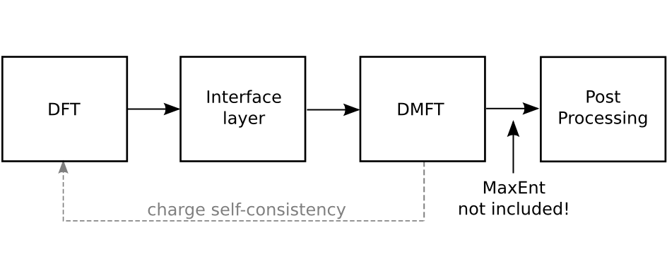

Structure of DFTTools¶
{kind=link}
The central part of DFTTools, which is performing the steps for the DMFT self-consistency cycle, is written following the same philosophy as the TRIQS toolbox. At the user level, easy-to-use python modules are provided that allow to write simple and short scripts performing the actual calculation. The usage of those modules is presented in the user guide of this Documentation. Before considering the user guide, we suggest to read the following introduction on the general structure of the DFTTools package.
The interface layer¶
Since the input for this DMFT part has to be provided by DMFT calculations, there needs to be another layer that connects the python-based modules with the DFT output. Naturally, this layer depends on the DFT package at hand. At the moment, there is an interface to the Wien2k band structure package, and a very light interface that can be used in a more general setup. Note that this light interface layer does not allow full charge self-consistent calculations.
Wien2k interface¶
This interface layer consists of two parts. First, the output from Wien2k
is taken, and localized Wannier orbitals are constructed. This is done
by the FORTRAN program dmftproj. The second part consist in
the conversion of the dmftproj into the hdf5 file
format to be used for the DMFT calculation. This step is done by a
python routine called Wien2kConverter, that reads the text output and
creates the hdf5 input file with the necessary ingredients. Quite
naturally, DFTTools will adopt this converter concept also for future
developments for other DFT packages.
General interface¶
In addition to the specialized Wien2k interface, DFTTools
provides also a very light-weight general interface. It basically
consists of a very simple HkConverter. As input it requires a
Hamiltonian matrix \(H_{mn}(\mathbf{k})\) written already in
localized-orbital indices \(m,n\), on a \(\mathbf{k}\)-point
grid covering the Brillouin zone, and just a few other informations
like total number of electrons, how many correlated atoms in the unit
cell, and so on. It converts this Hamiltonian into a hdf5 format and
sets some variables to standard values, such that it can be used with
the python modules performing the DMFT calculation. How the
Hamiltonian matrix \(H_{mn}(\mathbf{k})\) is actually calculated,
is not part of this interface.
The DMFT calculation¶
As mentioned above, there are a few python routines that allow to
perform the multi-band DMFT calculation in the context of real
materials. The major part is contained in the module
SumkDFT. It contains routines to
- calculate local Green functions
- do the upfolding and downfolding from Bloch bands to Wannier orbitals
- calculate the double-counting correction
- calculate the chemical potential in order to get the electron count right
- other things like determining the structure of the local Hamiltonian, rotating from local to global coordinate systems, etc.
At the user level, all these routines can be used to construct situation- and problem-dependent DMFT calculations in a very efficient way.
Full charge self consistency¶
Using the Wien2k interface, one can perform full charge
self-consistent calculations. SumkDFT provides routines to
calculate the correlated density matrix and stores it in a format that
can be read in by the lapw2 part of the Wien2k
package. Changing a one-shot calculation in a full charge
self-consistent one is only a couple of additional lines in the code!
Post-processing¶
The main result of DMFT calculation is the interacting Green function
and the self energy. However, one is normally interested in
quantities like band structure, density of states, or transport
properties. In order to calculate these, DFTTools
provides the post-processing modules SumkDFTTools.
It contains routines to calculate
- (projected) density of states
- partial charges
- correlated band structures (spaghettis)
- transport properties such as optical conductivity, resistivity, or thermopower.
Note that most of these post-processing tools need a real-frequency self energy, and should you be using a CT-QMC impurity solver this comes with the necessity of performing an analytic continuation.
Executing your python scripts¶
After having prepared your own python script you may run it on one core with
python MyScript.py
or in parallel mode
mpirun -np 64 python MyScript.py
where mpirun launches the calculation in parallel mode on 64 cores. The exact form of this command will, of course, depend on the mpi-launcher installed, but the form above works on most systems.
How to run full charge self-consistent DFT+DMFT calculations (in combination with Wien2k) is described in the full charge self-consistency tutorial and the Ce tutorial, as such calculations need to be launched in a different way.